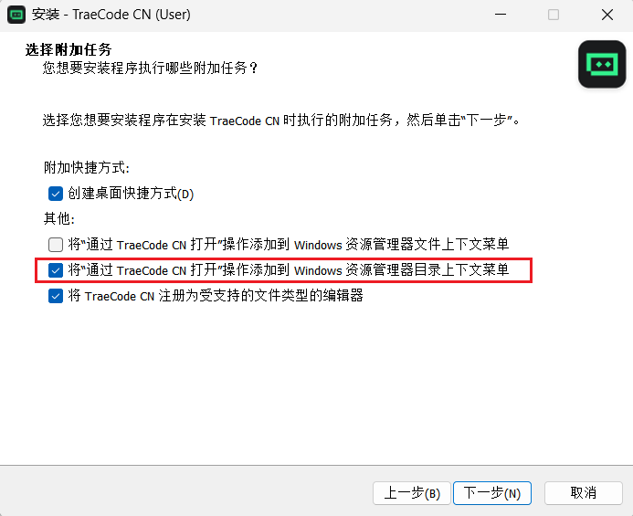
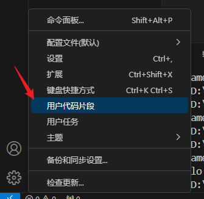
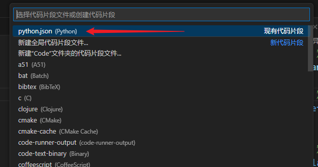

<!DOCTYPE lake>
<h2 data-lake-id="XrZQo" id="XrZQo"><span data-lake-id="u74271ddc" id="u74271ddc">下载Trae</span></h2><p data-lake-id="u1b3a3d3a" id="u1b3a3d3a"><span data-lake-id="u3e243393" id="u3e243393">官方首页：</span><a data-lake-id="u58f1eb95" href="https://trae.cn" id="u58f1eb95" rel="noopener noreferrer" target="_blank"><span data-lake-id="ub42951e9" id="ub42951e9">https://trae.cn</span></a><span data-lake-id="u22986be6" id="u22986be6"> 点击 </span><code data-lake-id="u7a8a2f89" id="u7a8a2f89"><span data-lake-id="u386fd80b" id="u386fd80b">下载TRAE CODE</span></code></p><p data-lake-id="u41eb97c1" id="u41eb97c1"></p><p data-lake-id="uf172f889" id="uf172f889"><span data-lake-id="u292d67b4" id="u292d67b4">安装过程一路下一步即可，其中建议勾选 </span><code data-lake-id="ua660e2a8" id="ua660e2a8"><span data-lake-id="ue09c8772" id="ue09c8772">将"通过TraeCode CN打开"操作添加到Windows资源管理器目录上下文菜单</span></code><span data-lake-id="u04cd71e7" id="u04cd71e7">方便我们直接通过目录右键打开Trae工程</span></p><p data-lake-id="u0ced0353" id="u0ced0353"></p><h2 data-lake-id="uvtQR" id="uvtQR"><span data-lake-id="u72e16630" id="u72e16630">推荐插件</span></h2><h3 data-lake-id="g1lxP" id="g1lxP"><span data-lake-id="ue9bfc319" id="ue9bfc319">必装</span></h3><ul list="u6b9ddfdf"><li data-lake-id="u9791e2f5" fid="u1c730784" id="u9791e2f5"><code data-lake-id="u0c516c15" id="u0c516c15"><span data-lake-id="u231df76e" id="u231df76e">Python</span></code><span data-lake-id="u3587d695" id="u3587d695"> python语言支持</span></li><li data-lake-id="u26a08c59" fid="u1c730784" id="u26a08c59"><code data-lake-id="u5f522c1b" id="u5f522c1b"><span data-lake-id="u3e443e15" id="u3e443e15">Python Extension Pack </span></code><strong><span data-lake-id="u16040877" id="u16040877">集成分析、高亮、规范等的插件包，主要包含</span></strong></li></ul><ul data-lake-indent="1" list="u6b9ddfdf"><li data-lake-id="u8335d5e7" fid="u2ff6bb19" id="u8335d5e7"><span data-lake-id="u8d75b362" id="u8d75b362">Python 开发环境支持</span></li><li data-lake-id="u4daa8cf7" fid="u2ff6bb19" id="u4daa8cf7"><span data-lake-id="ud1c32b29" id="ud1c32b29">autoDocstring	文档注释生成</span></li><li data-lake-id="uae9940f8" fid="u2ff6bb19" id="uae9940f8"><span data-lake-id="uede60746" id="uede60746">Python Indent	缩进辅助</span></li><li data-lake-id="u5f4a0c6f" fid="u2ff6bb19" id="u5f4a0c6f"><span data-lake-id="u32ac66a7" id="u32ac66a7">IntelliCode 智能提示助手</span></li><li data-lake-id="u66566f56" fid="u2ff6bb19" id="u66566f56"><span data-lake-id="u30ad359b" id="u30ad359b">Python Environment Manager 环境管理器</span></li></ul><ul list="u6b9ddfdf" start="3"><li data-lake-id="u2163116f" fid="u1c730784" id="u2163116f"><code data-lake-id="u4ec78b5f" id="u4ec78b5f"><span data-lake-id="ud845a5e0" id="ud845a5e0">Black Formatter</span></code><strong><span data-lake-id="uc03c9d81" id="uc03c9d81"> Python格式化工具</span></strong></li><li data-lake-id="u8b000b41" fid="u1c730784" id="u8b000b41"><code data-lake-id="u0817573d" id="u0817573d"><span data-lake-id="uc607bf74" id="uc607bf74">Code Runner</span></code><strong><span data-lake-id="u356f3adc" id="u356f3adc">通用方便的代码运行工具</span></strong></li><li data-lake-id="u45a6c677" fid="u1c730784" id="u45a6c677"><code data-lake-id="ued9d3dde" id="ued9d3dde"><span data-lake-id="uc375fe4c" id="uc375fe4c">PYQT Integration</span></code><span data-lake-id="u8c213a7d" id="u8c213a7d"> PyQt开发辅助插件</span></li></ul><h3 data-lake-id="DoY0I" id="DoY0I"><span data-lake-id="ubbe9993b" id="ubbe9993b">选装(先不用装)</span></h3><ul list="ub2ded319"><li data-lake-id="uc4a34b2f" fid="u0a499764" id="uc4a34b2f"><code data-lake-id="u43ba49a8" id="u43ba49a8"><span data-lake-id="ub8fc4b4c" id="ub8fc4b4c">Path Intellisense</span></code><span data-lake-id="ubd444c77" id="ubd444c77"> 路径智能补全</span></li><li data-lake-id="uddfb1729" fid="u0a499764" id="uddfb1729"><code data-lake-id="u1cc57d63" id="u1cc57d63"><span data-lake-id="u32669dd4" id="u32669dd4">Arepl</span></code><span data-lake-id="u5c1b852c" id="u5c1b852c"> 实时估算代码中的变量值</span></li><li data-lake-id="uda18111f" fid="u0a499764" id="uda18111f"><code data-lake-id="u3cb435c4" id="u3cb435c4"><span data-lake-id="u50bea941" id="u50bea941">Image preview</span></code><span data-lake-id="u935483ca" id="u935483ca"> 实时预览引用的图片</span></li><li data-lake-id="u73a7510a" fid="u0a499764" id="u73a7510a"><code data-lake-id="u0c0a1b24" id="u0c0a1b24"><span data-lake-id="u93f7fd05" id="u93f7fd05">GitHub Theme</span></code><span data-lake-id="u3d65f722" id="u3d65f722"> 主题，比原生的漂亮</span></li></ul><h2 data-lake-id="SvIpO" id="SvIpO"><span data-lake-id="uf2e62857" id="uf2e62857">修改官方插件市场地址</span></h2><p data-lake-id="u7863a276" id="u7863a276"><span class="lake-fontsize-12" data-lake-id="u014156c8" id="u014156c8" style="color: rgb(15, 17, 21)">在 Trae 里找不到插件是正常现象，主要是因为 Trae 默认的插件源是 Open VSX，需要配置微软官方的市场地址。</span></p><p data-lake-id="ub9c841e2" id="ub9c841e2"><span class="lake-fontsize-12" data-lake-id="u54d03054" id="u54d03054" style="color: rgb(15, 17, 21)">一次配置，之后就能像在 VS Code 里一样直接搜索和安装海量插件了</span></p><ol list="uf903fedd"><li data-lake-id="u937c5653" fid="u53b844da" id="u937c5653"><strong><span class="lake-fontsize-12" data-lake-id="ua4bedbec" id="ua4bedbec" style="color: rgb(15, 17, 21)">打开设置</span></strong><span class="lake-fontsize-12" data-lake-id="ufe7edeb9" id="ufe7edeb9" style="color: rgb(15, 17, 21)">：点击“文件”-“首选项”-“设置”-“去设置”。</span></li><li data-lake-id="ub7616c29" fid="u53b844da" id="ub7616c29"><strong><span class="lake-fontsize-12" data-lake-id="u54abe251" id="u54abe251" style="color: rgb(15, 17, 21)">搜索配置项</span></strong><span class="lake-fontsize-12" data-lake-id="u66b27a6b" id="u66b27a6b" style="color: rgb(15, 17, 21)">：在搜索框里输入</span><span class="lake-fontsize-12" data-lake-id="ubfd8053e" id="ubfd8053e" style="color: rgb(15, 17, 21)"> </span><code data-lake-id="u6a924109" id="u6a924109"><span class="lake-fontsize-12" data-lake-id="u3cea81ac" id="u3cea81ac" style="color: rgb(15, 17, 21); background-color: rgb(235, 238, 242)">market</span></code><span class="lake-fontsize-12" data-lake-id="u357617e4" id="u357617e4" style="color: rgb(15, 17, 21)">，找到</span><span class="lake-fontsize-12" data-lake-id="u09a35cd2" id="u09a35cd2" style="color: rgb(15, 17, 21)"> </span><code data-lake-id="ua04813c2" id="ua04813c2"><span class="lake-fontsize-12" data-lake-id="uf102d5ad" id="uf102d5ad" style="color: rgb(15, 17, 21); background-color: rgb(235, 238, 242)">Application: Extension Market Url</span></code><span class="lake-fontsize-12" data-lake-id="u0dda5767" id="u0dda5767" style="color: rgb(15, 17, 21)">。</span></li><li data-lake-id="u75ccdd43" fid="u53b844da" id="u75ccdd43"><strong><span class="lake-fontsize-12" data-lake-id="uce72fc31" id="uce72fc31" style="color: rgb(15, 17, 21)">替换市场地址</span></strong><span class="lake-fontsize-12" data-lake-id="u3b8a7c73" id="u3b8a7c73" style="color: rgb(15, 17, 21)">：将它默认的地址</span><span class="lake-fontsize-12" data-lake-id="u4a3e62b4" id="u4a3e62b4" style="color: rgb(15, 17, 21)"> </span><code data-lake-id="ubddd38c5" id="ubddd38c5"><span class="lake-fontsize-12" data-lake-id="u135a79d6" id="u135a79d6" style="color: rgb(15, 17, 21); background-color: rgb(235, 238, 242)">https://open-vsx.org/</span></code><span class="lake-fontsize-12" data-lake-id="u0681f4f7" id="u0681f4f7" style="color: rgb(15, 17, 21)"> </span><span class="lake-fontsize-12" data-lake-id="u6c96159f" id="u6c96159f" style="color: rgb(15, 17, 21)">替换为 VS Code 官方市场地址：</span><span class="lake-fontsize-12" data-lake-id="ufeb93544" id="ufeb93544" style="color: rgb(15, 17, 21)"><br/></span><code data-lake-id="u33295089" id="u33295089"><span class="lake-fontsize-12" data-lake-id="u1b4176a3" id="u1b4176a3" style="color: rgb(15, 17, 21); background-color: rgb(235, 238, 242)">https://marketplace.visualstudio.com/</span></code></li><li data-lake-id="u7918fc3a" fid="u53b844da" id="u7918fc3a"><strong><span class="lake-fontsize-12" data-lake-id="u3949a44b" id="u3949a44b" style="color: rgb(15, 17, 21)">重启 IDE</span></strong><span class="lake-fontsize-12" data-lake-id="u4a02f2ea" id="u4a02f2ea" style="color: rgb(15, 17, 21)">：修改后，</span><strong><span class="lake-fontsize-12" data-lake-id="u841daeb4" id="u841daeb4" style="color: rgb(15, 17, 21)">必须完全关闭并重新打开 Trae</span></strong><span class="lake-fontsize-12" data-lake-id="uce269f93" id="uce269f93" style="color: rgb(15, 17, 21)">，配置才会生效。重启后，直接在扩展商店搜索 </span><code data-lake-id="u51fbc0bf" id="u51fbc0bf"><span class="lake-fontsize-12" data-lake-id="u1f42fef2" id="u1f42fef2" style="color: rgb(15, 17, 21); background-color: rgb(235, 238, 242)">C/C++</span></code><span class="lake-fontsize-12" data-lake-id="u79649232" id="u79649232" style="color: rgb(15, 17, 21)">，就能找到微软官方插件并一键安装了</span></li></ol><p data-lake-id="ueeb889d9" id="ueeb889d9"><span class="lake-fontsize-12" data-lake-id="uec34480e" id="uec34480e" style="color: rgb(15, 17, 21)">​</span><br/></p><p data-lake-id="u5e0c814b" id="u5e0c814b"><span class="lake-fontsize-12" data-lake-id="u103ffadc" id="u103ffadc" style="color: rgb(15, 17, 21)">打开设置步骤</span></p><p data-lake-id="ue577f76c" id="ue577f76c"></p><p data-lake-id="u89a346e7" id="u89a346e7"><span data-lake-id="u2834d8ee" id="u2834d8ee">修改为 </span><code data-lake-id="u137894d1" id="u137894d1"><span class="lake-fontsize-12" data-lake-id="u6b8694b2" id="u6b8694b2" style="color: rgb(15, 17, 21); background-color: rgb(235, 238, 242)">https://marketplace.visualstudio.com/</span></code><span class="lake-fontsize-12" data-lake-id="u393717d7" id="u393717d7" style="color: rgb(15, 17, 21)"> 然后重启Trae</span></p><p data-lake-id="u310dbba9" id="u310dbba9"></p><p data-lake-id="u57c4370a" id="u57c4370a"><br/></p><h2 data-lake-id="mQyeN" id="mQyeN"><span data-lake-id="u749b6fab" id="u749b6fab">必选配置</span></h2><h3 data-lake-id="KpnHk" id="KpnHk"><span data-lake-id="u1cd44d8d" id="u1cd44d8d">勾选Run in Terminal(可以不用配置)</span></h3><p data-lake-id="u4e5dca53" id="u4e5dca53"><code data-lake-id="u7760e95a" id="u7760e95a"><span data-lake-id="u79bbb3d3" id="u79bbb3d3">Ctrl+,</span></code><span data-lake-id="u4fcba199" id="u4fcba199">打开设置（确保已安装Code Runner插件），搜索</span><code data-lake-id="u1b32cf46" id="u1b32cf46"><span data-lake-id="u9c3729bc" id="u9c3729bc">code run in</span></code><span data-lake-id="u72344169" id="u72344169">，勾选</span><code data-lake-id="u9414d45c" id="u9414d45c"><span data-lake-id="u431bbe9e" id="u431bbe9e">Run In Terminal</span></code></p><p data-lake-id="u62d34368" id="u62d34368"></p><h3 data-lake-id="iCL5t" id="iCL5t"><span data-lake-id="u21f26c92" id="u21f26c92">在文件目录运行代码</span></h3><p data-lake-id="u2f131bb1" id="u2f131bb1"><code data-lake-id="u33ce9876" id="u33ce9876"><span data-lake-id="u504d7b7e" id="u504d7b7e">Ctrl+,</span></code><span data-lake-id="uc9d0c8c3" id="uc9d0c8c3">打开设置（确保已安装Python插件），搜索</span><code data-lake-id="uf28c11cd" id="uf28c11cd"><span data-lake-id="ufa5bf9e3" id="ufa5bf9e3">execute</span></code><span data-lake-id="u7adbc1c8" id="u7adbc1c8">，勾选</span><code data-lake-id="uf122a98e" id="uf122a98e"><span data-lake-id="u845acc0f" id="u845acc0f">Execute in File Dir</span></code></p><p data-lake-id="ud6b367ce" id="ud6b367ce"></p><h3 data-lake-id="sKn62" id="sKn62"><span data-lake-id="ua15bfbe6" id="ua15bfbe6">自动猜测编码(可以不用配置)</span></h3><ul list="u4e45f6cb"><li data-lake-id="u65ccf808" fid="u98d5d87c" id="u65ccf808"><span data-lake-id="uce4c2066" id="uce4c2066">打开设置</span><code data-lake-id="u5b1d9032" id="u5b1d9032"><span data-lake-id="u34ae0e43" id="u34ae0e43">Ctrl + ,</span></code></li><li data-lake-id="u2b000479" fid="u98d5d87c" id="u2b000479"><span data-lake-id="u6091df91" id="u6091df91">勾选</span><code data-lake-id="uca89e11f" id="uca89e11f"><span data-lake-id="ua2dbb7b6" id="ua2dbb7b6">Auto Guess Encoding</span></code></li></ul><p data-lake-id="u65835e91" id="u65835e91"></p><h3 data-lake-id="jq4Q2" id="jq4Q2"><span data-lake-id="u21f5dda1" id="u21f5dda1">设置新建文件编码</span></h3><ul list="u902cd737"><li data-lake-id="u67015c9f" fid="u98d5d87c" id="u67015c9f"><span data-lake-id="ud232e5fe" id="ud232e5fe">打开设置</span><code data-lake-id="uaf0dbd62" id="uaf0dbd62"><span data-lake-id="u60268262" id="u60268262">Ctrl + ,</span></code></li><li data-lake-id="u923a6871" fid="u98d5d87c" id="u923a6871"><span data-lake-id="u09d40f6c" id="u09d40f6c">搜索</span><code data-lake-id="u60eaa606" id="u60eaa606"><span data-lake-id="u95677549" id="u95677549">Encoding</span></code></li><li data-lake-id="ud7f27495" fid="u98d5d87c" id="ud7f27495"><span data-lake-id="u0caba122" id="u0caba122">选择</span><code data-lake-id="ua8a2f6c4" id="ua8a2f6c4"><span data-lake-id="u45b39b5f" id="u45b39b5f">Files: Encoding</span></code><span data-lake-id="uc58caf2f" id="uc58caf2f">为</span><code data-lake-id="ub59d2b03" id="ub59d2b03"><span data-lake-id="u61ee8fca" id="u61ee8fca">UTF-8</span></code></li></ul><p data-lake-id="u98cb83e3" id="u98cb83e3"></p><h2 data-lake-id="eS84h" id="eS84h"><span data-lake-id="u1376da99" id="u1376da99">可选配置</span></h2><h3 data-lake-id="uILyq" id="uILyq"><span data-lake-id="u4b050b26" id="u4b050b26">文件自动保存</span></h3><ul list="u56944a27"><li data-lake-id="u24f088e0" fid="u690f993b" id="u24f088e0"><span data-lake-id="ua3d80d6b" id="ua3d80d6b">文件 -&gt; 勾选</span><code data-lake-id="uddea884b" id="uddea884b"><span data-lake-id="ubbcd2c1d" id="ubbcd2c1d">自动保存</span></code></li></ul><p data-lake-id="uf84ae3ba" id="uf84ae3ba"></p><h3 data-lake-id="J2sTk" id="J2sTk"><span data-lake-id="u0a5fd8c7" id="u0a5fd8c7">修改字号字体(可以先不用配置)</span></h3><p data-lake-id="u9a943aa2" id="u9a943aa2"><span data-lake-id="uaef0a7aa" id="uaef0a7aa">搜索：</span><code data-lake-id="u41aefa67" id="u41aefa67"><span data-lake-id="u5dfe6519" id="u5dfe6519">Editor: font</span></code></p><p data-lake-id="u5d09d812" id="u5d09d812"><span data-lake-id="ufad09ad4" id="ufad09ad4">打开设置</span><code data-lake-id="u3752fe99" id="u3752fe99"><span data-lake-id="ue98797aa" id="ue98797aa">Ctrl + ,</span></code><span data-lake-id="ucbba595b" id="ucbba595b"> 修改Font Size为</span><code data-lake-id="uc5c31728" id="uc5c31728"><span data-lake-id="u44470e9e" id="u44470e9e">16</span></code><span data-lake-id="u268588cc" id="u268588cc">，修改字体为</span><code data-lake-id="u11b79281" id="u11b79281"><span data-lake-id="ueb66dd49" id="ueb66dd49">consolas, '微软雅黑', monospace</span></code></p><p data-lake-id="u3f7cd883" id="u3f7cd883"></p><p data-lake-id="ufb13f24b" id="ufb13f24b"><br/></p><h3 data-lake-id="NO4dd" id="NO4dd"><span data-lake-id="u5ee5b792" id="u5ee5b792">修改文档注释格式</span></h3><p data-lake-id="u6f5b408f" id="u6f5b408f"><span data-lake-id="u9e7e517f" id="u9e7e517f">安装插件</span><code data-lake-id="ue2601023" id="ue2601023"><span data-lake-id="udc90c16f" id="udc90c16f">autodocstring</span></code></p><p data-lake-id="u2d59ce6d" id="u2d59ce6d"><span data-lake-id="u565b1ec2" id="u565b1ec2">打开插件</span><code data-lake-id="u2cb13cc1" id="u2cb13cc1"><span data-lake-id="u2c51186a" id="u2c51186a">autodocstring</span></code><span data-lake-id="u1f5ee964" id="u1f5ee964">设置，将</span><code data-lake-id="u56a3f402" id="u56a3f402"><span data-lake-id="uc4acc04e" id="uc4acc04e">Docstring Format</span></code><span data-lake-id="u50712e9d" id="u50712e9d">选项修改为</span><code data-lake-id="uce292d82" id="uce292d82"><span data-lake-id="u72732e21" id="u72732e21">sphinx-notypes</span></code></p><p data-lake-id="u887a2a4a" id="u887a2a4a"></p><p data-lake-id="u0b1aaa74" id="u0b1aaa74"><br/></p><h3 data-lake-id="p68lM" id="p68lM"><span data-lake-id="ufe56b535" id="ufe56b535">配置__main__入口(先不用配置)</span></h3><ol list="u4b34f04a"><li data-lake-id="u7599927e" fid="ud100ba3c" id="u7599927e"><span data-lake-id="u4906fa96" id="u4906fa96">打开设置-用户代码片段</span></li></ol><p data-lake-id="u8eea112c" id="u8eea112c"></p><ol list="udb077139" start="2"><li data-lake-id="u5422b9b4" fid="u17fb2702" id="u5422b9b4"><span data-lake-id="udae761b9" id="udae761b9">过滤python</span></li></ol><p data-lake-id="u2c2a17d8" id="u2c2a17d8"></p><p data-lake-id="ufb12c6be" id="ufb12c6be"><br/></p><ol list="u3d49904b" start="3"><li data-lake-id="u05c73b4a" fid="ubf77f575" id="u05c73b4a"><span data-lake-id="ua0180caa" id="ua0180caa">在最外边的</span><code data-lake-id="u3e6729a6" id="u3e6729a6"><span data-lake-id="udc187aa8" id="udc187aa8">{}</span></code><span data-lake-id="u8ed6f74e" id="u8ed6f74e">内，添加如下内容：</span></li></ol><span class="yuque-card-unsupported">[codeblock]</span>